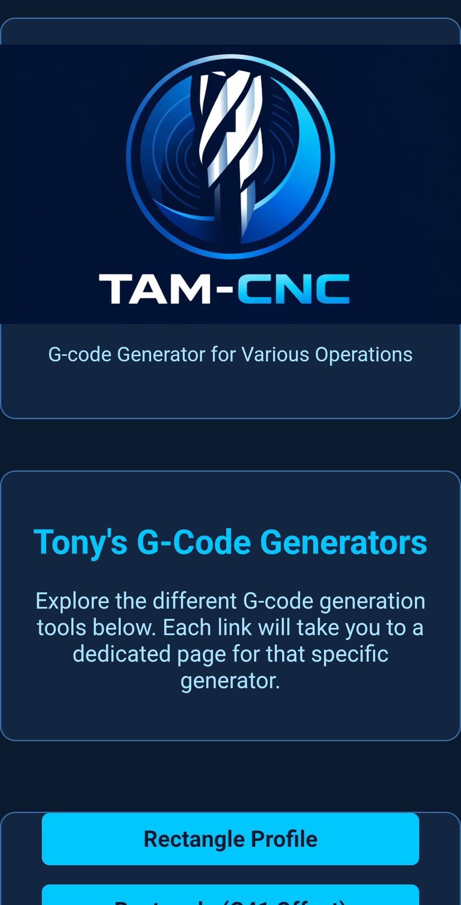
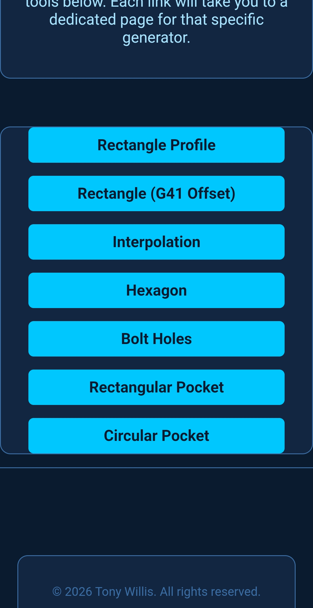
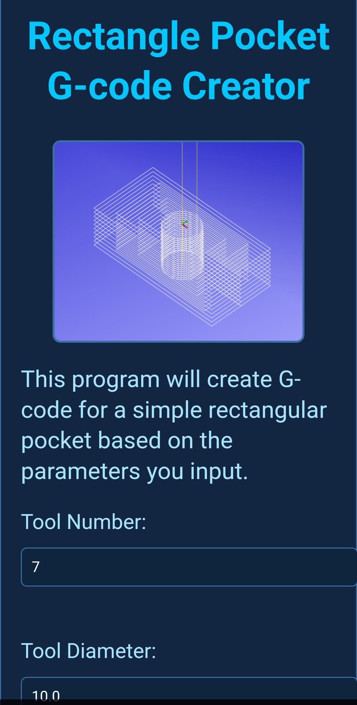
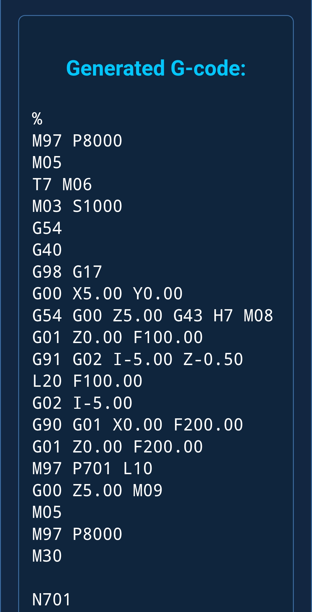

TAM Android App
TAM‑CNC is also the name of an Android app I’ve created to share the simplified G‑code style I’ve been
machining with for over a decade. It generates programs for eight different CNC milling
operations using the same approach I rely on every day — clean subroutines, loops, and
interpolation that keep code efficient, readable, and easy to modify.
The app began as a personal project to help me learn Python by recreating the logic I use at the machine.
It quickly became a handy reference tool for myself, then something I realised other
machinists could benefit from. Eventually it became clear: this is an ideal teaching
tool for students and apprentices who want to understand real‑world G‑code structure,
not just textbook examples.
One of the biggest advantages of TAM‑CNC is speed. You simply fill in the variables for
the operation you want, tap Generate, and the app produces the full G‑code instantly.
Change a single variable — depth, diameter, step‑over, whatever — hit Generate again,
and you can immediately see how the code changes.
It’s far quicker than using CAM or conversational programming on a machine, and perfect for
experimenting, learning, or building intuition.
TAM‑CNC is now available for public testing on Google Play. You can join the Open Test
instantly using the link below — no registration or email required, just sign in to Google Play.
TAM-CNC Android App



